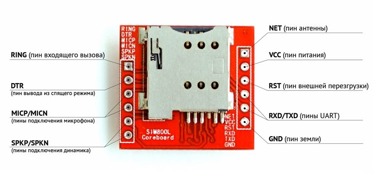
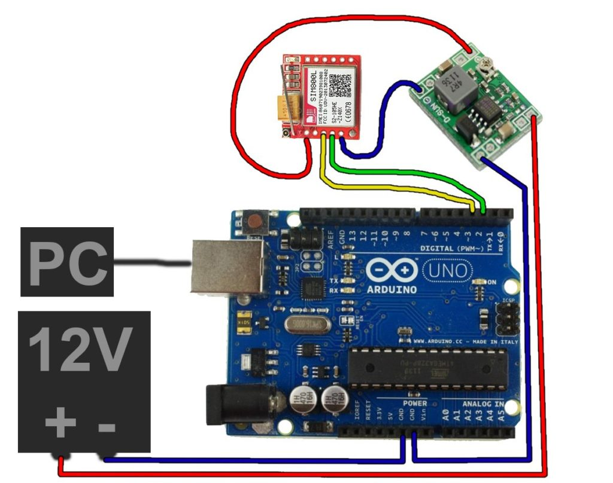
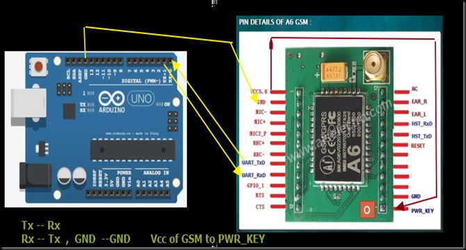
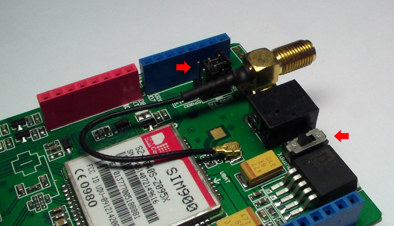
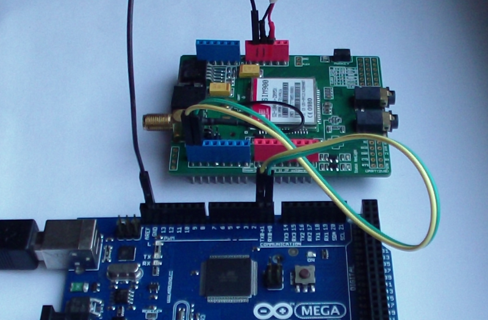
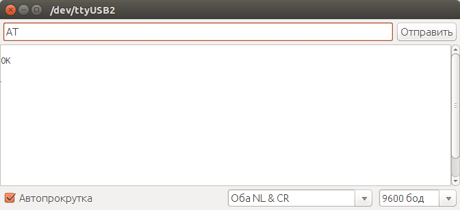

Шилд для разработки, совместимый с Ардуино, на базе модуля SIM900 GPRS/GSM
Шилд для разработки, совместимый с Ардуино, на базе модуля SIM900 GPRS/GSM
GSM и GPRS модуль в проектах Ардуино позволяет подключаться к удаленным автономным устройствам через обычную сотовую связь. Мы можем отправлять команды на устройства и принимать информацию от него с помощью SMS-команд или через интернет-подключение, открытое по GPRS. В этой статье мы рассмотрим наиболее популярные модули для Arduino, разберемся с подключением и рассмотрим примеры программирования.
Содержание [скрыть]
GSM модуль используется для расширения возможностей обычных плат Ардуино – отправка смс, совершение звонков, обмен данными по GPRS. Существуют различные виды модулей, наиболее часто используемые – SIM900, SIM800L, A6, A7.
Модуль SIM900 используется в различных автоматизированных системах. С помощью интерфейса UART осуществляется обмен данными с другими устройствами. Модуль обеспечивает возможность совершения звонков, обмен текстовыми сообщениями. Работа модуля релизуется на компоненте SIM900, созданным фирмой SIMCom Wireless Solution.
Технические характеристики:
С помощью устройства можно отслеживать маршрут транспорта совместно с ГЛОНАСС или GPS устройством. Возможность отправки смс-сообщений используется в беспроводной сигнализации и различных охранных системах.
Модуль выполнен на основе компонента SIM800L и используется для отправки смс, реализации звонков и обмена данными по GPRS. В модуль устанавливается микро сим карта. Устройство обладает встроенной антенной и разъемом, к которому можно подключать внешнюю антенну. Питание к модулю поступает от внешнего источника либо через DC-DC преобразователь. Управление осуществляется с помощью компьютера через UART, Ардуино, Raspberry Pi или аналогичные устройства.
Технические характеристики:
Модуль A6 разработан фирмой AI-THINKER в 2016 году. Устройство используется для обмена смс-сообщениями и обмена данными по GPRS. Плата отличается низким потреблением энергии и малыми размерами. Устройство полностью совместимо с российскими мобильными операторами.
Технические характеристики:
Модуль поддерживает карты формата микросим.
A7 является новейшим модулем от фирмы AI-THINKER. По сравнению со своим предшественником A6 имеет встроенный GPS, позволяющий упрощать конструкцию устройства.
Технические характеристики:
Устройство поддерживает микросим карты. Модуль поддерживает обмен звонками, обмен смс-сообщениями, передачу данных по GPRS, прием сигналов по GPS.
Где купить GSM модули для ардуино
Традиционно, прежде чем начать, несколько советов и полезных ссылок на продавцов Aliexpress.
|
|
Подключение GSM GPRS шилда к Arduino
В этом разделе мы рассмотрим вопросы подключения GSM – модулей к плате адуино. За основу почти во всех примерах берется Arduino Uno, но в большинстве своем примеры пойдут и для плат Mega, Nano и т.д.
Для подключения нужны плата Ардуино, модуль SIM800L, понижающий преобразователь напряжения, провода для соединения и батарея на 12В. Модуль SIM800L требует нестандартное для ардуино напряжение в 3,7В, для этого нужен понижающий преобразователь напряжения.
Распиновка модуля SIM800 приведена на рисунке.

Плату Ардуино нужно подключить к компьютеру через USB кабель. Батарею на 12 В подключить через преобразователь: -12В на землю Ардуино, от земли в преобразователь в минус, +12В в преобразователь в плюс. Выходы с модуля TX и RX нужно подключить к пинам 2 и 3 на Ардуино. Несколько модулей можно подключать к любым цифровым пинам.

Модуль A6 стоит дешевле, чем SIM900, и его очень просто подключать к Ардуино. Модуль питается напряжением 5В, поэтому для соединения не нужны дополнительно понижающие напряжение элементы.
Для подключения потребуются плата Ардуино (в данном случае рассмотрена Arduino UNO), GSM модуль А6, соединительные провода. Схема подключения приведена на рисунке.

Вывод RX с модуля GSM нужно подключить к TX на плате Ардуино, вывод TX подключить к пину RX на Ардуино. Земля с модуля соединяется с землей на микроконтроллере. Вывод Vcc на GSM модуле нужно соединить с PWR_KEY.
Подключение с помощью GSM-GPRS шилда
Перед подключением важно обратить внимание на напряжение питания шилда. Ток в момент звонка или отправки данных может достигать значений в 15-2 А, поэтому не стоит запитывать шилд напрямую от Ардуино.
Перед подключением к Ардуино нужно установить сим-карту на GSM-GPRS шилд. Также нужно установить джамперы TX и RX, как показано на рисунке.

Подключение производится следующим образом – первый контакт (на рисунке желтый провод) с шилда нужно соединить с TX на Ардуино. Второй контакт (зеленый провод) подключается к RX на Ардуино. Земля с шилда соединяется с землей с аруино. Питание на микроконтроллер поступает через USB кабель.
Макет соединения шилда и платы Ардуино изображен на рисунке.

Для работы потребуется установить библиотеку GPRS_Shield_Arduino.
Для проверки правильности собранной схемы нужно сделать следующее: соединить на Ардуино RESET и GND (это приведет к тому, что данные будут передаваться напрямую от шилда к компьютеру), вставить сим-карту в шилд и включить питание шилда. Плату Ардуино нужно подключить к компьютеру и нажать кнопку включения. Если все соединено правильно, загорится красный светодиод и будет мигать зеленый.
Краткое описание взаимодействия через AT-команды
AT-команды – это набор специальных команд для модема, состоящий из коротких текстовых строк. Чтобы модем распознал поданную ему команду, строки должны начинаться с букв at. Строка будет восприниматься, когда модем находится в командном режиме. AT-команды можно отправлять как при помощи коммуникационного программного обеспечения, так и вручную с клавиатуры. Практические все команды можно разделить на 3 режима – тестовый, в котором модуль отвечает, поддерживает ли команду; чтение – выдача текущих параметров команды; запись – произойдет записывание новых значений.
Список наиболее используемых AT-команд:
В данном случае рассмотрены основные команды для модуля SIM900. Для разных модулей команды могут незначительно отличаться. Данные для модуля будут подаваться через специальную программу «терминал», которую нужно установить на компьютер. Также подавать команды модулю можно через монитор порта в Arduino IDE.

Скетчи для работы с модулем GSM
Отправка СМС на примере SIM900
Перед тем, как отправить сообщение, нужно настроить модуль. В первую очередь нужно перевести в текстовый формат передаваемое сообщение. Для этого существует команда AT+CMGF=1. Нужно перевести кодировку на GSM командой AT+CSCS=»GSM». Эта кодировка наиболее удобная, так как там символы представлены в ASCII коде, который легко понимает компилятор.
Затем нужно набрать смс-сообщение. Для этого посылается команда с номером абонента AT+CMGS=»+79XXXXXXXXX» r, в ответ предлагается набрать текст смс. Нужно выполнить отправку сообщения. По окончании требуется отправить код комбинации Ctrl+Z, модуль позволит отправку текста адресату. Когда сообщение будет отправлено, вернется OK.
Взаимодействие с модулем основано на индексах, которые присваиваются каждому новому сообщению. По этому индексу можно указать, какое из сообщений удалить или прочитать.
Получение смс. Для чтения смс-сообщения используется команда AT + CNMI = 2,2,0,0,0. Когда на модуль придет текстовое сообщение, он отправит в последовательный порт +CMTI: «SM»,2 (в данном случае 2 – порядковый номер сообщения). Чтобы его прочитать, нужно отправить команду AT+CMGR=2.
Прием голосового звонка. В первую очередь для разговора нужно подключить к модулю динамик и микрофон. При получении звонка будет показан номер, с которого он совершен. Для осуществления работы нужно включить библиотеку GSM:
#include <GSM.h>
Если сим-карта заблокирована, нужно ввести ее пин-код. Если пин-код не требуется, это поле нужно оставить пустым.
#define PINNUMBER “”
В setup() должна быть произведена инициализация передачи данных на компьютер. Следующим шагом будет создание локальной переменной, чтобы отследить статус подключения к сети. Скетч не будет запущен, пока сим-карта не подключена к сети.
boolean notConnected = true;
С помощью функции gsmAccess.begin() происходит подключение к сети. При установлении соединения вернется значение GSM_READY.
vcs.hangCall(); – функция, показывающая, что модем готов принимать звонки.
getvoiceCallStatus() – определяет статус скетча. Если кто-то звонит, она возвращает значение RECEIVINGCALL. Для записи номера нужно воспользоваться функцией retrieveCallingNumber(). Когда будет совершен ответ на звонок, вернется TALKING. Затем скетч будет ждать символа новой строки, чтобы прервать разговор.
Установить GPRS-соединение и отправить данные на удаленный сервер
Сначала нужно установить библиотеку SoftwareSerial, которая позволяет обеспечивать последовательную передачу информации и связать GSM-модуль и микроконтроллер Ардуино.
Для отправки данных на сервер нужно отправить следующие команды:
AT+SAPBR=1,1 – открытие Carrier.
Следующие три команды связаны с установкой настроек подключения к сети.
AT+SAPBR=3,1,\”APN\”,\”internet.mts.ru\” – выбор оператора mts, имя точки доступа.
AT+SAPBR=3,1,\”USER\”,\” mts \” – выбор пользователя mts.
AT+SAPBR=3,1,\”PWD\”,\” mts \”
AT+SAPBR=1,1 – установка соединения.
AT+HTTPINIT – инициализация http.
AT+HTTPPARA=”URL”, – URL адрес.
AT+HTTPREAD – ожидание ответа.
AT+HTTPTERM – остановка http.
Если все выполнено правильно, в мониторе порта будут появляться строчки с АТ командами. Если отсутствует связь с модемом, то будет показывать по одной строке. При успешной установке GPRS-соединения на модуле начнет мигать светодиод.
�